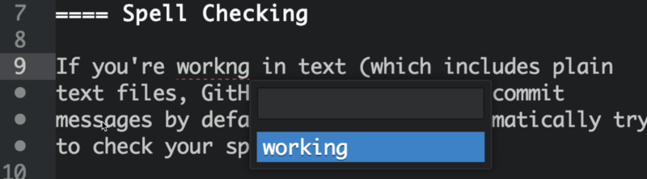
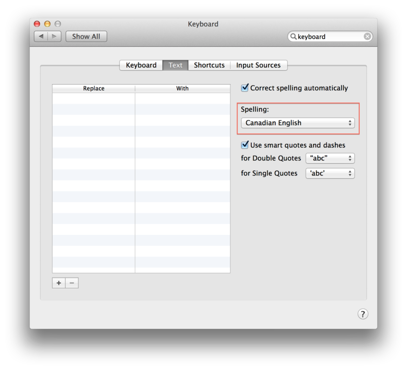
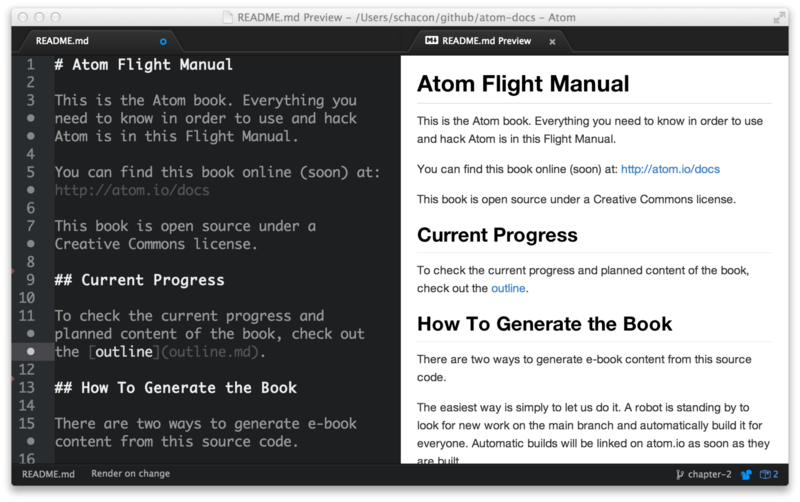

在Atom中写作#
虽然Atom通常可能用来编写软件的代码，但是它还可以用来高效地编写文章。这通常采用一些标记语言，比如说Markdown和Asciidoc（也就是英文手册所用的格式）来完成。下面我们会很快浏览一遍Atom提供给你用来写文章的一些工具。
拼写检查#
如果你在处理文本（通常包括纯文本文件，Github Markdown文件和Github提交信息），Atom会自动尝试去检查你的拼写。
任何拼写错误的单词都会高亮显示（通常以单词下方的点状红色下划线），你可以按下cmd-:来拉出菜单查看可能的正确选项（或者从右键弹出的菜单中，或命令面板中选择“Correct Spelling”）。

要向Atom尝试检查拼写的列表中添加文件类型，在你的设置视图中访问拼写检查包的设置，然后添加你希望检查的任何语法。
需要检查的默认语法是“text.plain, source.gfm, text.git-commit”，但是你可以添加类似“source.asciidoc”的东西，如果你希望也检查这种类似的文件。
Atom拼写检查工具使用系统的字典，所以如果你希望在另一种语言或者区域中检查拼写，你可以很容易修改它。

拼写检查功能在atom/spell-check包中实现。
预览#
使用Markdown写文章的时候，从渲染后的内容的样子中得到一个想法还是很有用的。Atom中默认带有Markdown预览插件。
ctrl-shift-M
为Markdown开启预览模式。

在你编辑文本时，预览也会默认自动更新。这样你在打字时检查语法就变得容易了。
你也可以从预览面板中，复制任何渲染后的HTML到系统剪贴板中。这个操作没有任何快捷键，但是你可以在命令面板中通过搜索“Markdown Preview Copy HTML”来找到它。
Markdown预览在atom/markdown-preview包中实现。
代码段#
有很多好用的代码段是为快速编写Markdown准备的。
如果你输入img之后按下tab，你会得到像这样的Markdown格式的图片代码。如果你输入table之后按下tab，你会得到一个非常棒的用于填充的示例表格。
| Header One | Header Two | | :------------- | :------------- | | Item One | Item Two |
虽然用于Markdown的代码段不多（b粗体，i斜体，code代码块，等等），它们会节省你用于寻找模糊的语法的时间。另外，你可以按下alt-shift-S，来寻找当前文件类型可用的代码段列表。